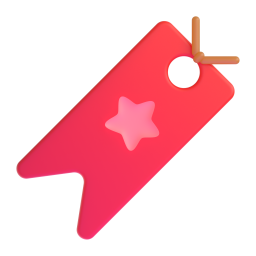
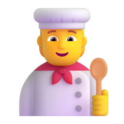
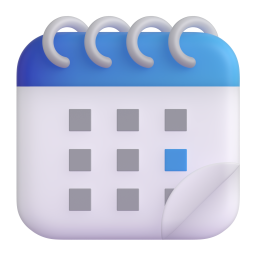
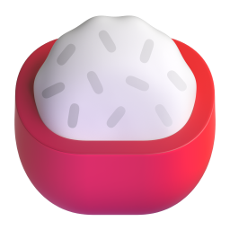
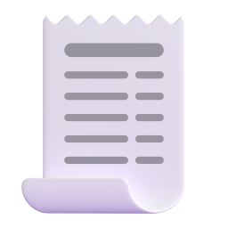
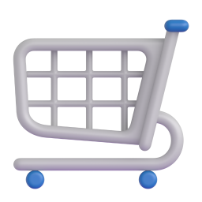
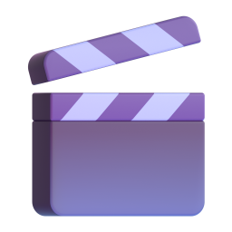
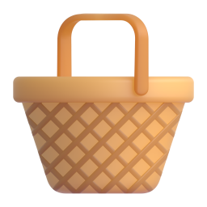
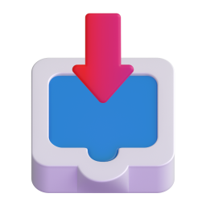
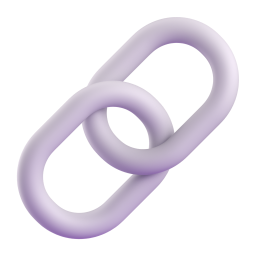

Bu turda eklenenler

Koleksiyonlar: kahvaltı, çorba, ana yemek, salata ve meze, atıştırmalık, tatlı; yüksek protein, hafif, doyurucu, 15 dakikada, ekonomik, vejetaryen. Her birinde kaçı şu an yapılabilir yazıyor.
"Yaptıklarım" pişirdikçe kendiliğinden doluyor; "Misafir menüsü" gibi kendi koleksiyonlarını kitap ayracıyla oluşturuyorsun.
Haftalık plan: ankette seçtiğin gün sayısı kadar akşam; bir malzeme iki kez sayılmıyor, eksikler tek listede.
Dünden kalan: pilav, makarna, tavuk, bayat ekmek, patates. Onu değerlendiren tarifler.
Fişten ya da barkoddan dolap doldurma. "TAM YAĞLI SÜT" yağ sanılmıyor, alt satırdaki kilo okunuyor.- Sesli pişirme: "sonraki", "geri", "tekrar oku", "zamanlayıcı". Eller hamurluyken.
 "Senin tabağın": yediğin porsiyon günlük kaloriye ve proteine eklenir; fotoğraflı yemek günlüğü; TikTok paylaşım kartı.
"Senin tabağın": yediğin porsiyon günlük kaloriye ve proteine eklenir; fotoğraflı yemek günlüğü; TikTok paylaşım kartı. Mevsim takvimi, ana ekran aracı, hatırlatmalar, Şef+ (ilk sürümde ücretsiz), KVKK ve gizlilik ekranı.
Mevsim takvimi, ana ekran aracı, hatırlatmalar, Şef+ (ilk sürümde ücretsiz), KVKK ve gizlilik ekranı. İlk açılışta 7 soruluk anket: amaç, haftada kaç gün, kimin için, aletler, beslenme, tarif saklama, plan saati. Her cevap bir şeyi değiştiriyor.
İlk açılışta 7 soruluk anket: amaç, haftada kaç gün, kimin için, aletler, beslenme, tarif saklama, plan saati. Her cevap bir şeyi değiştiriyor. Tarif üç parçada: Malzemeler · Adımlar · Besin değeri. Besin değerinde porsiyon ve toplam, günlük ihtiyaca oran.
Tarif üç parçada: Malzemeler · Adımlar · Besin değeri. Besin değerinde porsiyon ve toplam, günlük ihtiyaca oran.
Alışveriş listesinde "Neler alabilirim?": tek malzemeyle en çok tarif açanlar, hangi tarifler olduğuyla.
TikTok'ta bir tarif videosunda Paylaş → Buzdolabı Şefi: tarif açıklamadan okunup kaydediliyor.
Kaydedilen tarif dolabınla karşılaştırılıyor: neyin var, neyin yok; eksikler tek dokunuşla listeye. Tarifte videonun sahibi (@hesap) ve "Videoyu izle" butonu; hak sahibine geri bağlantı.
Tarifte videonun sahibi (@hesap) ve "Videoyu izle" butonu; hak sahibine geri bağlantı. Uydurmuyor: kataloğumuzda olmayan malzemeyi "Tanıyamadığım malzemeler" altında gösteriyor.
Uydurmuyor: kataloğumuzda olmayan malzemeyi "Tanıyamadığım malzemeler" altında gösteriyor.
Ana sayfada "Videodan kaydettiklerin" şeridi; adını değiştir, sil, favorile, pişir.
Link ya da tarif metni yapıştırarak da kaydedilebiliyor; tarif yoksa boş kaydetmiyor.